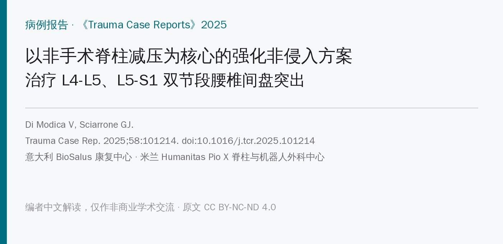
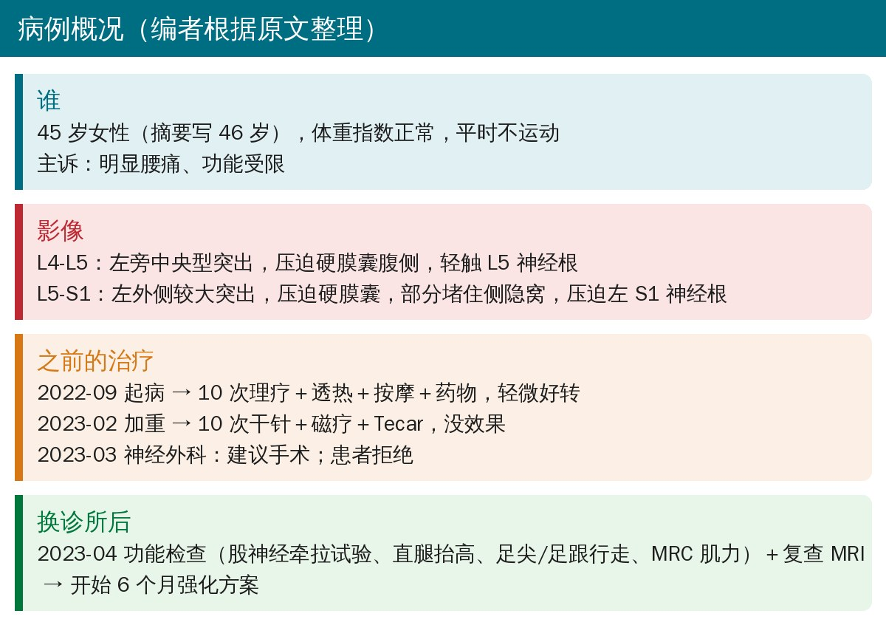
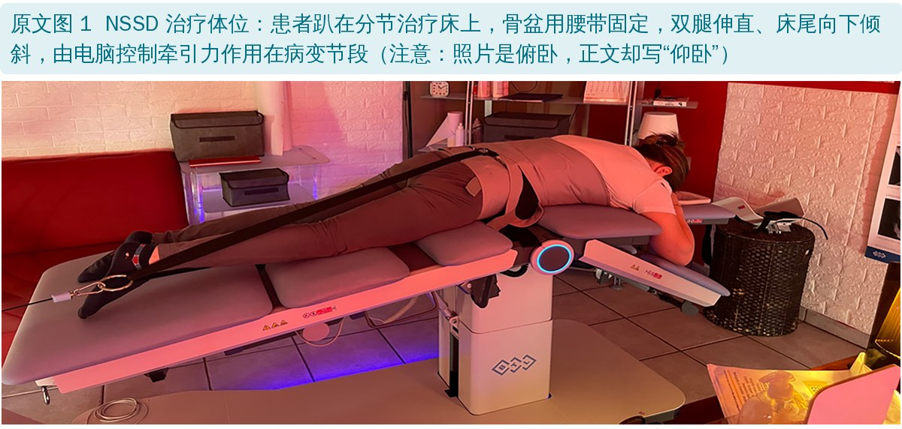
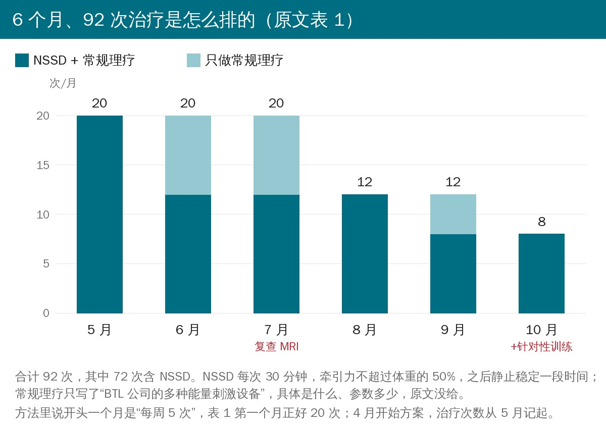
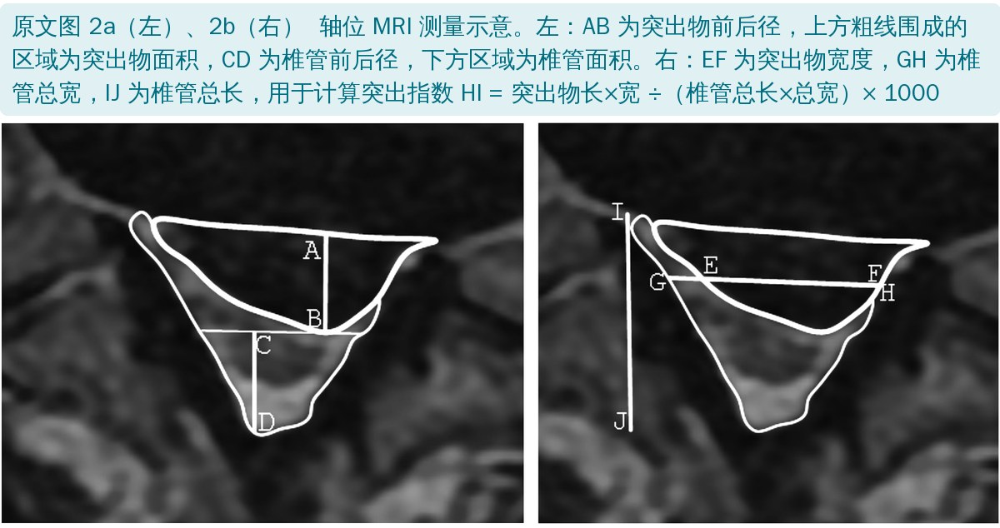
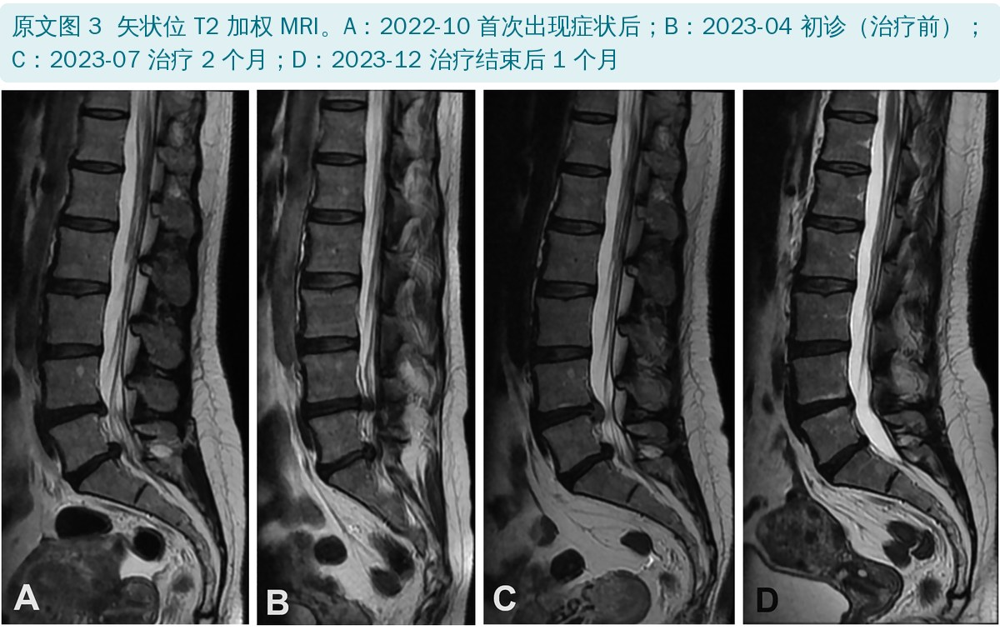
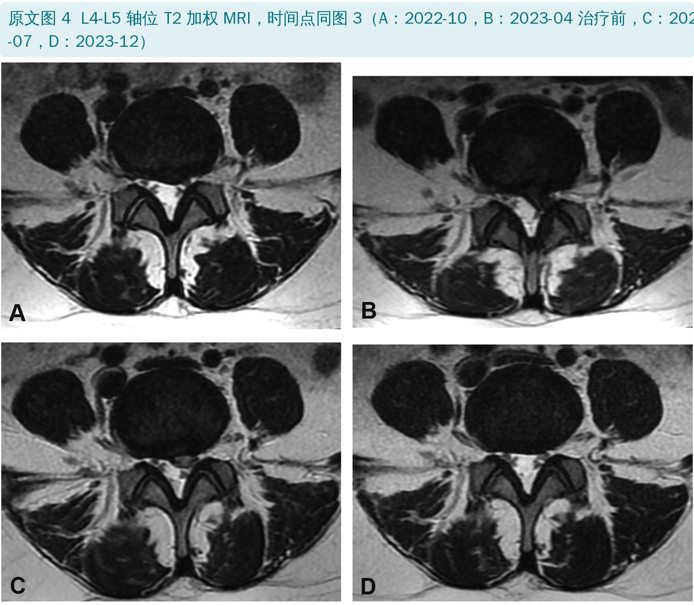
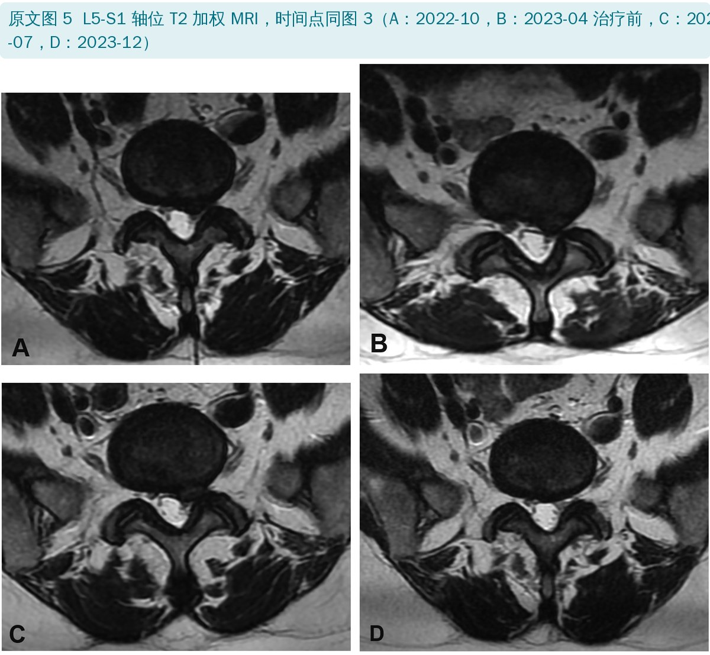
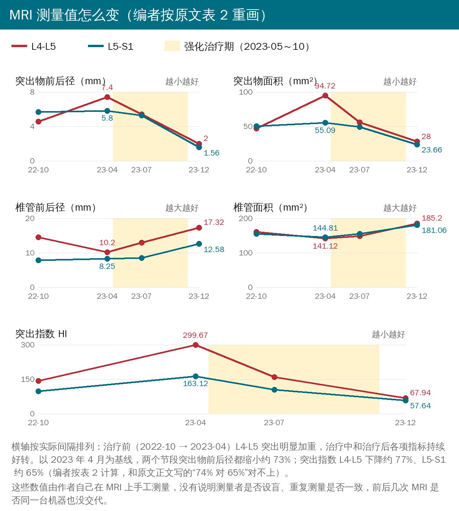
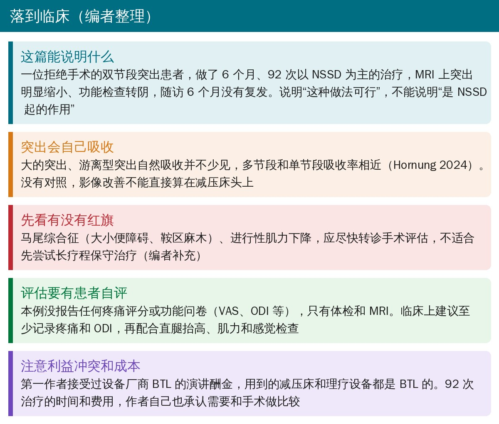

🔖原文信息（编者中文重排）
📚 文献信息
▪ Di Modica V, Sciarrone GJ. An intensive non-invasive protocol combining non-surgical spinal decompression and supportive physiotherapeutic modalities in the treatment of double-level disc herniation at L4-L5 and L5-S1: A case report. Trauma Case Rep. 2025;58:101214. doi:10.1016/j.tcr.2025.101214
▪ 中文题目：以非手术脊柱减压结合辅助物理因子的强化非侵入方案治疗 L4-L5 和 L5-S1 双节段椎间盘突出：病例报告
▪ 作者单位：意大利 BioSalus 康复中心；意大利米兰 Humanitas Pio X 脊柱与机器人外科中心
▪ 研究类型：单个病例报告
腰椎间盘突出是康复门诊最常见的问题之一，L4-L5 和 L5-S1 是最好发的两个节段。两个节段同时突出相对少见，症状往往更重，临床上更容易直接被建议手术；非手术治疗双节段突出的资料几乎是空白。
非手术脊柱减压（NSSD）这几年在国内外康复机构里很火：患者躺在电脑控制的分节治疗床上，用腰带固定，机器按设定的角度和力量做间歇性牵引，宣称能把牵引力“精准”作用到病变节段，给椎间盘减压。
这篇病例的特别之处在于：患者双节段突出、两轮常规理疗无效、神经外科建议手术，拒绝手术后做了 6 个月、92 次以 NSSD 为主的治疗，而且前后做了4 次 MRI，并对突出物和椎管做了定量测量。很多 NSSD 研究只看疼痛评分，影像随访少见。
但它是单个病例，第一作者还和设备厂商有经济往来，读的时候要打折扣，后面会具体说。

• 基本情况：45 岁女性（摘要写 46 岁），体重指数正常，平时不运动，明显腰痛、功能受限
• 2022 年 10 月 MRI：L4-L5 左旁中央型突出，压迫硬膜囊腹侧，轻触 L5 神经根；L5-S1 左外侧较大突出，压迫硬膜囊，部分堵住侧隐窝，压迫左侧 S1 神经根
• 第一轮保守治疗（2022 年 9 月起）：10 次理疗加运动治疗、透热、按摩和药物，只轻微好转
• 第二轮（2023 年 2 月症状加重）：10 次干针、磁疗和 Tecar，没有明显改善，转诊神经外科
• 2023 年 3 月：神经外科建议手术，患者拒绝，换到作者所在的私立康复中心
• 2023 年 4 月：功能检查（股神经牵拉试验、直腿抬高试验、足尖和足跟行走、MRC 肌力分级）提示突出明显，神经外科会诊后复查 MRI，L5 和 S1 神经根受压，随即开始强化方案
要注意的是，原文没有给出任何疼痛评分或功能问卷，也没写直腿抬高是多少度阳性、哪块肌肉肌力几级。“症状有多重”只能从“被建议手术”这件事上间接推断。

• 设备：BTL 公司的非手术脊柱减压系统
• 体位：原文正文写“仰卧，双腿伸直并向下倾斜”，让减压力作用于病变节段；但原文图 1 的照片是俯卧位
• 剂量：牵引力不超过体重的 50%，每次主动治疗 30 分钟，之后在静止体位下做一段“稳定期”（多长没写）
• 原文没写牵引角度、拉力和放松的周期、起始力量和加量方法

• 常规理疗：“BTL 公司的多种能量刺激设备”，用来缓解症状、促进组织修复；具体是哪些设备、什么参数，原文没写
• 排程：第一个月每周 5 次 NSSD 加常规理疗，之后按反应调整频率和内容；最后一个月加了针对性的稳定训练
• 总量：92 次治疗，其中 72 次含 NSSD，20 次只做常规理疗。作者说这比其他 NSSD 研究多得多，因为要同时处理两个较大的突出（7.4 mm 和 5.8 mm）
表 1 治疗时间线（编者根据原文表 1 翻译）
| 时间 | 检查/事件 | 治疗（效果） |
|---|---|---|
| 2022.9 | 出现症状 | 10 次：理疗加运动治疗、透热、按摩、药物（轻微改善） |
| 2022.10 | MRI | |
| 2023.2 | 10 次：干针、磁疗、Tecar（无改善） | |
| 2023.3 | 神经外科会诊 | 建议手术，患者拒绝 |
| 2023.4 | 换诊所：功能检查、MRI、神经外科会诊 | 开始强化方案（此后由作者设计和执行） |
| 2023.5 | 20 次：NSSD＋常规理疗 | |
| 2023.6 | 12 次：NSSD＋常规理疗；8 次：常规理疗 | |
| 2023.7 | MRI | 12 次：NSSD＋常规理疗；8 次：常规理疗 |
| 2023.8 | 12 次：NSSD＋常规理疗 | |
| 2023.9 | 8 次：NSSD＋常规理疗；4 次：常规理疗 | |
| 2023.10 | 8 次：NSSD＋常规理疗＋针对性训练 | |
| 2023.12 | MRI；功能检查 | |
| 2024.6 | 功能检查 |

作者用 DICOM 看图软件在轴位 MRI 上手工测量，除了突出物前后径、突出物面积、椎管前后径、椎管面积，还按 Choi 等 2022 年的方法算了突出指数（HI）：
HI = 突出物长度 × 突出物宽度 ÷（椎管总长 × 椎管总宽）× 1000
HI 越大，说明突出物占椎管的比例越大。功能方面每次复查做同一组体检：股神经牵拉试验、直腿抬高、足尖和足跟行走、MRC 肌力。



表 2 四次 MRI 的测量值（编者根据原文表 2 翻译；治疗中为开始治疗 2 个月，治疗后为结束后 1 个月）
| 指标 · 节段 | 2022-10 | 2023-04 治疗前 | 2023-07 治疗中 | 2023-12 治疗后 |
|---|---|---|---|---|
| 突出物前后径（mm） L4-L5 | 4.54 | 7.40 | 5.4 | 2.00 |
| L5-S1 | 5.68 | 5.80 | 5.26 | 1.56 |
| 突出物面积（mm²） L4-L5 | 47.03 | 94.72 | 55.66 | 28.00 |
| L5-S1 | 50.33 | 55.09 | 49.23 | 23.66 |
| 椎管前后径（mm） L4-L5 | 14.53 | 10.20 | 12.99 | 17.32 |
| L5-S1 | 7.79 | 8.25 | 8.54 | 12.58 |
| 椎管面积（mm²） L4-L5 | 160.09 | 141.12 | 148.36 | 185.20 |
| L5-S1 | 154.97 | 144.81 | 155.3 | 181.06 |
| 突出指数 HI L4-L5 | 143.06 | 299.67 | 159.96 | 67.94 |
| L5-S1 | 97.54 | 163.12 | 103.47 | 57.64 |

• 治疗前在加重：从 2022 年 10 月到 2023 年 4 月，L4-L5 的突出物前后径从 4.54 mm 涨到 7.40 mm，HI 翻了一倍多
• 治疗 2 个月：两个节段都开始好转，L4-L5 好转更明显
• 治疗结束后 1 个月：突出物前后径 L4-L5 缩小 5.4 mm、L5-S1 缩小 4.24 mm，都缩小了约 73%；椎管前后径和面积都超过了 2022 年首次 MRI 时的数值
• 功能检查：股神经牵拉、直腿抬高、足尖足跟行走和肌力检查都恢复正常，随访到 2024 年 6 月没有再出现神经功能缺损
• 多项研究显示 NSSD 能减轻腰椎间盘突出的症状，但很少有影像学证据；作者认为 NSSD 把减压力精准作用在病变节段，使椎间关节分离、松动，给椎间盘卸载，从而让突出回缩、椎管变宽
• 双节段突出用 NSSD 治疗以前没有报道过，设计合理的方案可能同时改善多个节段
• 自然吸收：Hornung 2024 发现多节段突出的自然吸收和单节段一样常见；作者认为本例在之前半年里没有改善，所以自然吸收“不太可能”
• 成本：92 次治疗的时间和费用不少，和手术相比是否划算值得研究，但不在本文范围内
• MRI 定量测量：费时、依赖测量者经验，临床不常规做；作者建议今后研究用它来做“该保守还是该手术”的决策工具
• 单个病例、没有对照：最多说明“这样做可行”，不能说明“是 NSSD 起的作用”
• 自然吸收没法排除：腰椎间盘突出，尤其是大的突出，在几个月到一年内自然吸收很常见；本例从起病到最后一次 MRI 共 15 个月，正好落在常见的吸收时间窗里。“之前半年没改善所以不是自然吸收”这个推理并不成立，治疗前突出还在长大，恰恰是之后吸收的常见前奏（编者补充）
• 多种治疗叠加：NSSD、常规理疗、最后一个月的训练同时用，就算有效也分不清是哪一样
• 没有患者自评结局：全文没有疼痛评分（VAS/NRS）、没有功能问卷（ODI 等），患者到底疼不疼、能不能正常生活，只能靠“功能检查转阴”推断
• 测量方法的可信度：MRI 由作者自己手工测量，没说是否设盲、没做重复测量一致性；4 次 MRI 跨两家机构，是否同一台机器、同样的扫描参数没有交代，毫米级的变化可能被这些因素放大或抵消
• 利益冲突：第一作者声明接受过 BTL 公司的演讲酬金，而文中的减压床和所有理疗设备都是 BTL 的
• 方案写得不够细：NSSD 的角度、周期、加量方法和常规理疗的内容都没写，别人很难照着做
• 优点：影像随访完整，治疗前、中、后都有 MRI，并且给了定量数据；治疗次数、时间线交代清楚；作者在讨论里主动提到了自然吸收和成本的问题
• 年龄：摘要写 46 岁，病例部分写 45 岁
• 体位：正文写 NSSD 时“仰卧”，原文图 1 的照片是俯卧
• HI 的改善百分比：正文说 HI 的改善“稍偏向 L4-S1 节段，74% 对 L4-L5 的 65%”。按表 2 以 2023 年 4 月为基线计算，L4-L5 下降约 77%，L5-S1 约 65%，改善更多的是 L4-L5；“L4-S1”也不是一个节段，应为笔误
• 突出大小：讨论写 L4-L5 突出 7.38 mm，表 2 是 7.40 mm
• “治疗前 6 个月没改善”：讨论说“治疗的前 6 个月没有明显改善”，但结果部分说治疗 2 个月时已经好转；结合上下文，作者想说的应是“起病后、开始本方案前的 6 个月”
• “6 个月随访”：治疗 10 月结束，最后一次功能检查在 2024 年 6 月，约 7～8 个月，不是整 6 个月
• “椎管长度”的定义：方法里把椎管长度定义为“椎间盘最低点到椎管最低点的距离”，和通常的椎管前后径不同；L5-S1 椎管前后径只有 7.79 mm，按常规标准已是明显狭窄，原文没讨论
• MRC：原文缩写表写成“Muscle Research Council”，应为 Medical Research Council（英国医学研究委员会肌力分级）
• “建议手术是唯一选择”：摘要说两轮理疗失败后手术被建议为唯一选择，但原文没有给出马尾症状、进行性肌无力这类手术的强指征，也没写神经检查的具体阳性结果
• 期刊和病例性质：发表在《创伤病例报告》，但本例没有外伤史，引言里也只是泛泛提到多节段突出“可能来自车祸等外伤”

🔖临床要点（编者整理）
• 先排除红旗征：马尾综合征（大小便障碍、鞍区麻木）、进行性肌力下降，应尽快转诊手术评估，不适合先尝试长疗程保守治疗（编者补充）
• “建议手术”不等于“必须手术”：没有红旗征、患者不想手术时，规范的保守治疗仍然是合理选择；向患者讲清楚突出有自然吸收的可能，也讲清楚保守治疗要花的时间
• NSSD 可以作为选项，但别夸大：现有证据主要是症状改善，本例是第一篇双节段影像随访，仍属于个案；不要对患者说“机器能把突出拉回去”
• 评估要有患者自评：至少记录疼痛（NRS/VAS）和 ODI，再配合直腿抬高、股神经牵拉、肌力和感觉检查；复查 MRI 不是常规，有指征再做
• 别只做被动治疗：本例最后一个月才加训练。指南推荐的核心仍然是宣教、保持活动和运动治疗，被动治疗是辅助（编者补充）
欢迎关注骨科康复小黄公众号，获取更多物理治疗的专业知识！
📄参考文献：
Di Modica V, Sciarrone GJ. An intensive non-invasive protocol combining non-surgical spinal decompression and supportive physiotherapeutic modalities in the treatment of double-level disc herniation at L4-L5 and L5-S1: A case report. Trauma Case Rep. 2025;58:101214. doi:10.1016/j.tcr.2025.101214
原文 © 2025 The Authors，Elsevier 出版，以知识共享署名—非商业性使用—禁止演绎 4.0 协议（CC BY-NC-ND 4.0）开放获取。本文为非商业的学术交流中文解读：原文图 1～5 原样引用，图内内容未作任何改动，中文说明均为图外图注；原文图 6 未引用，编者根据原文表 2 的数据另行绘制；表格为编者翻译；首图、病例概况卡、治疗安排图、临床要点卡和封面为编者根据原文整理绘制。版权归原作者所有，仅供学习交流，如有侵权请联系删除。